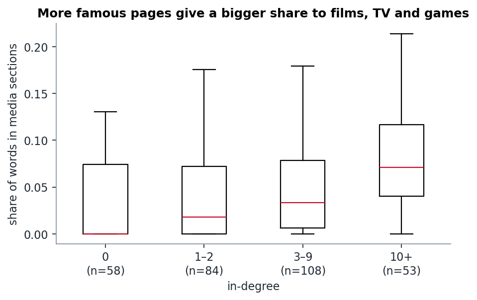

Week 5 · NLP I
Does network fame buy you more words?
Yes, but with steeply diminishing returns. The characters far off the trend show what in-degree misses: a brother who is famous in Britain, a hero lost in a court case, and a codename that several people share.
The question
The first half of the course measured fame with links: in-degree is how many Marvel pages point at you. The text half gives us a second yardstick, how many words Wikipedia spends on you. Do the two agree? And where they disagree, what is going on?
What we did
- Tokenised all 303 pages (lower-case, letters and digits, apostrophes kept inside words) and counted tokens per page.
- Plotted words against in-degree + 1 on log–log axes. The +1 keeps the 58 characters with no in-links on the plot.
- Fitted a straight line in log–log space and ranked every character by its residual: how many times more (or fewer) words they have than their in-degree predicts.
The relationship

- Spearman ρ = 0.75: famous characters clearly do get longer pages.
- The slope is 0.72, i.e. words ∝ (k_in + 1)^0.72. That is sublinear: ten times more in-links buys about five times more text.
- R² = 0.59 on log scales, so a lot is left unexplained. The median page has 1,258 words, and the range runs from 195 (Helix) to 14,295 (Scarlet Witch).
Far above the line: more words than links
| character | in-degree | words | × predicted |
|---|---|---|---|
| Brian Braddock | 1 | 7,402 | 8.0 |
| Miracleman | 0 | 4,425 | 7.9 |
| Betsy Braddock | 7 | 13,210 | 5.2 |
| U.S. Agent | 6 | 9,754 | 4.2 |
| Isaiah Bradley | 0 | 2,076 | 3.7 |
We read the pages:
- Brian Braddock is Captain Britain. His only in-link inside the category comes from his twin sister Betsy. His long page is about British comics (Excalibur, MI-13, "champion of the British Isles"). He is famous in a part of the Marvel universe that this category barely touches.
- Miracleman is linked by nobody here. His page is long because of his real-world history: a British character caught in a decades-long legal dispute over who owned him, before Marvel brought him back in 2010. That is fame in publishing history, not in the story world.
- U.S. Agent and Isaiah Bradley both have Marvel Cinematic Universe roles (The Falcon and the Winter Soldier), and their pages carry long film and TV sections.
Far below the line: links without words
| character | in-degree | words | × predicted |
|---|---|---|---|
| Quasar | 24 | 1,033 | 0.18 |
| Blue Bullet | 2 | 333 | 0.27 |
| Ch'od | 4 | 515 | 0.29 |
Quasar is the most interesting point on the plot (and the odd one from week 1, with 24 in-links and 3 out). His page begins "Quasar is the name of several superheroes". It is an umbrella page for a codename shared by Wendell Vaughn, Phyla-Vell, Richard Rider and Avril Kincaid. Each of them gets a paragraph or two. Two dozen pages link to "Quasar", but the text is divided between four people. Links pile up on the name. The words do not.
Where do the extra words go?

We split each page at its section headings and measured the share of words under In other media / Film / Television / Video games. The median share rises from 0% for characters with no in-links to 7% for characters with 10 or more. That is a real trend, but small: most of the extra length of a famous page is still comic-book biography.
Limitation
Our section splitter is a heuristic (a short capitalised line with no full stop counts as a heading). It works on the pages we inspected, but it will occasionally treat a one-line sentence as a heading. More importantly, page length measures Wikipedia editors' attention, which follows films and fandom as much as story importance.